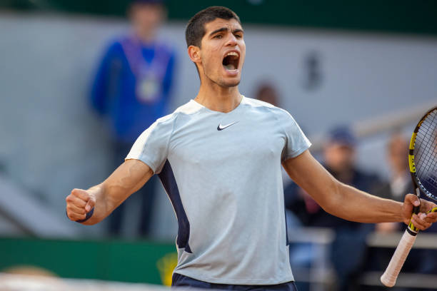

Sucesor de nadal.
.
¿Porque se le conoce como sucesor de nadal?
Se le conoce como el sucesor de nadal al jovencisimo jugador de tenis,conocido como Carlos Alcaraz , que con tan solo 21 años de edad ha conseguido ser un jugador a destacar entre otros muchos tenistas de la elite del deporte como Nadal y Djokovic, gente muy veterana el ámbito del deporte. Alcaraz a su temprana edad, y a pesar de venir de una ciudad pequeña de Murcia conocida con el nombre de El Palmar una pedania de unos 24.000 habitantes, nacido en el seno de una familia completamente relacionada con el tenis ,decidió empezar en el deporte favorito de toda su familia para llegar a ser como su idolo, Rafa Nadal. Aunque no se le hizo fácil, ya que había muchos jugadores que a su edad ya estaban jugando en torneos internacionales y regionales ganando grandes cantidades de dinero y titulos mientras él estaba comenzando a jugar algún torneo que otro, pero aún de estar en una situación difícil en esos tiempos, decidió no hacerse pequeño ante las piedras del camino y, apostar todo por su futuro deportivo para dar su máximo por su sueño e intentar conseguir su sueño a pesar de las dificultades de venir de una familia no muy adinerada y con no una muy buena situación de vida para lograr ser el mejor algún día.